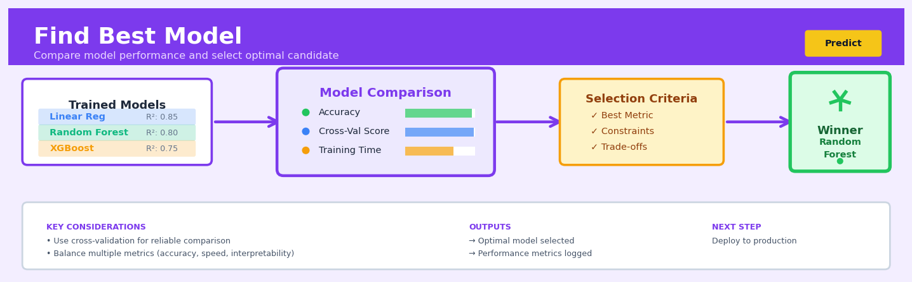

Find Best Model#


The biggest mistake I see is teams selecting models based solely on a single validation metric without considering inference latency, memory footprint, or explainability requirements. Your best model on paper might be a Random Forest with 0.94 accuracy, but if it takes 200ms to predict when your API timeout is 100ms, you'll be deploying the logistic regression with 0.89 accuracy instead. Always define your selection criteria before training, not after you see the scores.
The 60-Second Version#
What it does: Find Best Model automatically tests dozens of machine learning algorithms on your data and identifies which one makes the most accurate predictions.
When to use it: You have a prediction problem—forecasting sales, identifying likely customers, detecting fraud—but don’t know which algorithm will work best for your specific data.
What you get back: A single recommended model with its expected accuracy, ready to generate predictions on new data.
Difficulty |
Easy |
Typical runtime |
Minutes to hours, depending on data size and number of algorithms tested |
What you bring |
Historical data with known outcomes (e.g., past customers and whether they purchased) |
What you get |
The best-performing algorithm and its accuracy estimate on unseen data |
Heuristix bucket |
Predict — Machine Learning & Forecasting |
The algorithm that wins on your historical data won’t necessarily win on tomorrow’s data—always monitor performance after deployment.
Learning Objectives#
After reading this chapter, a business user will be able to:
Identify prediction problems where automated model selection offers value over single-algorithm approaches, distinguishing scenarios where the data structure is uncertain from those where domain knowledge prescribes a specific method.
Interpret model comparison tables and performance metrics to explain to stakeholders which algorithm was selected, why it outperformed alternatives, and what level of prediction accuracy to expect in production.
Decide whether to deploy the recommended model by weighing the performance gains against implementation complexity, and specify acceptance criteria for automated model selection in future projects.
After reading this chapter, a data scientist will be able to:
Implement Find Best Model with appropriate cross-validation strategies, preprocessing pipelines, and algorithm portfolios while avoiding data leakage and ensuring fair comparison across candidate models.
Configure the size and composition of the algorithm portfolio, the cross-validation scheme, and the performance metric to balance computational cost against the probability of finding the truly optimal model for the task.
Diagnose why Find Best Model selected a particular algorithm by examining learning curves, feature importance patterns, and performance stability across folds, and detect overfitting to the validation process itself.
Overview#
Find Best Model is an automated model selection procedure that systematically searches across a portfolio of candidate machine learning algorithms, evaluates each under cross-validation, and identifies the model that best generalises to unseen data for a given prediction task. It belongs to the family of AutoML (Automated Machine Learning) methods, specifically addressing the model selection component of the machine learning pipeline. The procedure treats algorithm selection as a discrete optimisation problem over a finite hypothesis space, where the objective is to minimise expected out-of-sample prediction error.
When to Use This#
Use this when you have a new prediction problem and no prior knowledge about which algorithm family will perform best — the “no free lunch” theorem guarantees no single algorithm dominates across all problems, making empirical comparison essential.
Use this when you need to establish a performance baseline quickly — before investing in feature engineering or hyperparameter tuning, Find Best Model identifies which algorithmic approaches warrant further investigation.
Use this when you want to defend your model choice to stakeholders — the systematic comparison provides evidence that alternatives were considered and the selected model demonstrably outperforms them.
Use this when your data characteristics have changed — if you’re rebuilding a model after a data drift event or schema change, previously optimal algorithms may no longer be appropriate.
Use this when computational resources permit multiple model fits — Find Best Model requires training \(k \times m\) models (where \(k\) is the number of cross-validation folds and \(m\) is the number of candidate algorithms), which can be substantial.
Use this when you have sufficient training data — cross-validation requires enough observations to create meaningful train/validation splits; with very small datasets, variance in performance estimates becomes prohibitive.
Do NOT use this when you have strong domain knowledge dictating model choice — if interpretability requirements mandate logistic regression, or regulatory constraints require specific model types, searching alternatives wastes resources.
Do NOT use this when you need real-time model updates — the computational cost makes this unsuitable for online learning scenarios requiring immediate model adaptation.
Do NOT use this as a substitute for understanding your data — Find Best Model selects among candidates but cannot fix fundamental data quality issues, target leakage, or inappropriate problem formulation.
Questions This Answers#
Choosing the Right Approach#
Which forecasting method should we use for next quarter’s sales — should we stick with our current Excel trend analysis or try something more sophisticated?
We have three different consultants proposing different models for our customer churn problem — how do we know which one will actually work best?
Is machine learning even worth it for predicting our inventory needs, or should we just use the simple moving average we’ve always used?
Our marketing team wants to predict campaign response rates — what’s the most accurate way to do this without hiring a full data science team?
Which algorithm gives us the best prediction for patient readmission risk — we need something we can actually trust before implementing in the hospital?
Making Better Predictions#
Can we predict which customers are likely to default on their loans in the next 6 months with enough accuracy to change our approval process?
How accurately can we forecast demand for our top 50 products for the next quarter — and which method gets us closest?
What’s the best way to predict which leads are actually going to convert so our sales team stops wasting time on dead ends?
Can we reliably predict equipment failures 30 days in advance, and which approach gives us the fewest false alarms?
Which employees are at highest risk of leaving in the next year, and how confident can we be in those predictions?
Improving Current Systems#
Our current pricing model isn’t working — is there a better way to predict optimal price points for our products?
We’re getting too many complaints about late deliveries — can we predict which orders will be late before they go out?
Is there a more accurate way to predict project completion times than what our project managers are currently estimating?
Our fraud detection system flags way too many false positives — can we find a better model that catches real fraud without annoying customers?
How It Works#
Imagine you’re hiring a contractor to renovate your kitchen, but instead of interviewing candidates one-by-one, you invite five different contractors to each complete a small test project—installing a single cabinet—in five different homes similar to yours. You pay close attention not just to how well they do in one home, but how consistently they perform across all five. The contractor who delivers quality work in four out of five homes (not just the one they happened to get lucky with) is the one you trust with your actual kitchen. Find Best Model works exactly this way: it tests multiple algorithms on different slices of your data to find the one that performs reliably, not just the one that got lucky on a particular sample.
┌─────────────────────────────────────────────────────┐
│ YOUR DATASET (e.g., customer data) │
│ ┌───┬───┬───┬───┬───┬───┬───┬───┬───┬───┐ │
│ │ 1 │ 2 │ 3 │ 4 │ 5 │ 6 │ 7 │ 8 │ 9 │10 │ │
│ └───┴───┴───┴───┴───┴───┴───┴───┴───┴───┘ │
└─────────────────────────────────────────────────────┘
↓
Split into 5 folds for testing
↓
┌────────────────────────────────────────────────────┐
│ Test each candidate algorithm on each fold: │
│ │
│ Algorithm A [■■■■□] → Average Score: 0.82 │
│ Algorithm B [■■■■■] → Average Score: 0.91 │
│ Algorithm C [■■□□■] → Average Score: 0.68 │
│ Algorithm D [■■■□■] → Average Score: 0.79 │
│ │
│ (■ = good performance, □ = poor performance) │
└────────────────────────────────────────────────────┘
↓
SELECT WINNER
↓
┌─────────────────────────┐
│ BEST MODEL: Algorithm B│
│ (most consistent) │
└─────────────────────────┘
Step 1: Assemble the candidates. The procedure starts with a portfolio of machine learning algorithms—decision trees, neural networks, gradient boosting machines, and others. Each algorithm represents a different strategy for finding patterns in data, like having different tools in a toolbox.
Step 2: Divide the data into test segments. Your dataset gets split into multiple pieces, typically five or ten chunks called “folds.” Think of this like creating multiple dress rehearsals before opening night—each fold becomes a practice stage where algorithms prove themselves.
Step 3: Run the tournament. Each candidate algorithm trains on most of the data, then gets tested on the held-out fold. This process repeats, rotating which fold is held out, so every algorithm gets evaluated on every slice of data. It’s a round-robin competition where everyone faces the same challenges.
Step 4: Measure consistency. The procedure calculates how well each algorithm performed on average across all folds. An algorithm that scores 90% on four folds and 40% on one fold is less trustworthy than one that scores 85% on all five folds—consistency matters more than occasional brilliance.
Step 5: Select the winner. The algorithm with the best average performance across all folds wins. This winner becomes your deployed model, the one you’ll use to make predictions on new, real-world data you haven’t seen yet.
The key insight: By testing each algorithm on data it hasn’t seen during training, Find Best Model identifies which approach genuinely understands the underlying patterns rather than just memorizing the examples it was shown.
The Intuition#
Imagine you are a chef preparing for a cooking competition where the dish must appeal to judges you have never met. You have mastered several cuisines: French, Japanese, Italian, and Thai. Each cuisine has its own techniques, flavour profiles, and ingredient combinations. Without knowing the judges’ preferences, how do you decide which cuisine to showcase?
The sensible approach is to prepare sample dishes from each cuisine and have trusted colleagues taste them — colleagues whose palates you believe are similar to the judges’. If your French dishes consistently score highest across multiple tasters, you gain confidence that French cuisine is your best bet for the actual competition. This is precisely what Find Best Model does: it treats each algorithm as a “cuisine,” uses cross-validation folds as “tasters,” and selects the algorithm whose “dishes” (predictions) most consistently satisfy the evaluation criteria.
The power of this approach lies in its empirical honesty. Rather than relying on theoretical arguments about which algorithm should work best, we let the data adjudicate. A gradient boosting model might have won Kaggle competitions, but for your specific dataset — with its particular feature relationships, noise structure, and class distribution — a simple regularised linear model might generalise better. Find Best Model discovers this through systematic experimentation rather than assumption.
Crucially, we evaluate on held-out data that the model did not see during training. This guards against the seductive trap of overfitting: a highly flexible model might memorise the training data perfectly while failing catastrophically on new observations. By measuring performance on data the model cannot “cheat” on, we obtain honest estimates of how each algorithm will perform when deployed in production — which is, after all, the only performance that matters for business outcomes.
The Mathematics#
Problem Setup and Notation#
Let \(\mathcal{D} = \{(x_i, y_i)\}_{i=1}^{n}\) denote our training dataset, where \(x_i \in \mathcal{X} \subseteq \mathbb{R}^p\) is a \(p\)-dimensional feature vector and \(y_i \in \mathcal{Y}\) is the target variable. For regression, \(\mathcal{Y} = \mathbb{R}\); for classification, \(\mathcal{Y} = \{1, 2, \ldots, C\}\) for \(C\) classes.
Let \(\mathcal{A} = \{A_1, A_2, \ldots, A_m\}\) denote a finite set of candidate learning algorithms. Each algorithm \(A_j\) is a mapping from datasets to hypothesis functions:
where \(\mathcal{H}_j\) is the hypothesis space associated with algorithm \(A_j\).
Let \(L: \mathcal{Y} \times \mathcal{Y} \rightarrow \mathbb{R}_{\geq 0}\) denote a loss function measuring prediction error. Common choices include:
Mean Squared Error (regression): \(L(y, \hat{y}) = (y - \hat{y})^2\)
Cross-entropy (classification): \(L(y, \hat{p}) = -\sum_{c=1}^{C} \mathbb{1}[y=c] \log \hat{p}_c\)
0-1 loss (classification): \(L(y, \hat{y}) = \mathbb{1}[y \neq \hat{y}]\)
The Model Selection Objective#
The goal is to select the algorithm \(A^*\) that minimises the expected generalisation error:
where \(P\) denotes the true (unknown) data-generating distribution and \(h_j = A_j(\mathcal{D})\) is the hypothesis learned by algorithm \(A_j\) from the training data.
Since \(P\) is unknown, we cannot compute this expectation directly. We instead estimate it using cross-validation.
\(K\)-Fold Cross-Validation Estimator#
Partition the dataset \(\mathcal{D}\) into \(K\) disjoint folds \(\mathcal{D}_1, \mathcal{D}_2, \ldots, \mathcal{D}_K\) of approximately equal size. For each fold \(k\), define:
Training set: \(\mathcal{D}^{(-k)} = \mathcal{D} \setminus \mathcal{D}_k\)
Validation set: \(\mathcal{D}_k\)
For algorithm \(A_j\), the cross-validation estimate of generalisation error is:
where \(h_j^{(-k)} = A_j(\mathcal{D}^{(-k)})\) is the model trained on all data except fold \(k\).
The selected algorithm is then:
Assumptions#
Independent and identically distributed (i.i.d.) data: The observations \((x_i, y_i)\) are drawn independently from a common distribution \(P\).
Stationarity: The data-generating process does not change between training and deployment.
Representative candidate set: The optimal algorithm for the problem exists within \(\mathcal{A}\), or a sufficiently close approximation does.
Sufficient sample size: Each cross-validation fold must contain enough observations to yield meaningful error estimates.
Consistent data preprocessing: Any preprocessing applied to training folds must be consistently applied to validation folds to avoid information leakage.
Variance of the Cross-Validation Estimator#
The cross-validation estimator is subject to variance from two sources: the randomness in the data and the randomness in the fold partition. For algorithm \(A_j\), the variance can be decomposed as:
where \(\sigma^2\) is the variance of the loss and the covariance term captures the correlation between error estimates across folds (which share training data).
Multiple Comparisons and Selection Bias#
When comparing \(m\) algorithms, we face a multiple comparisons problem. Even if all algorithms have identical true performance, the selected algorithm \(\hat{A}^*\) will appear better than average due to selection bias:
This optimistic bias grows with \(m\). To obtain an unbiased estimate of the selected model’s performance, one should employ nested cross-validation: an outer loop estimates generalisation error while an inner loop performs model selection.
Relationship to Statistical Hypothesis Testing#
Model comparison can be framed as a hypothesis test. The null hypothesis \(H_0: \mu_i = \mu_j\) states that two algorithms have equal expected error. The test statistic uses the difference in cross-validation errors:
where \(\bar{d} = \widehat{\text{Err}}_{CV}(A_i) - \widehat{\text{Err}}_{CV}(A_j)\) is the mean difference in fold-wise errors. The corrected paired t-test (Nadeau and Bengio, 2003) adjusts the variance estimate to account for non-independence:
where \(s_d^2\) is the sample variance of the fold differences.
Edge Cases#
Single candidate (\(m=1\)): Find Best Model reduces to cross-validation for performance estimation.
Leave-one-out (\(K=n\)): Minimises bias but maximises variance; computationally expensive.
Identical performance: When algorithms have indistinguishable error rates, selection becomes arbitrary; parsimony or interpretability should guide the choice.
Understanding the Mathematics#
The Model Portfolio#
The equation: $\(\mathcal{M} = \{M_1, M_2, \ldots, M_K\}\)$
Read it aloud: “The model portfolio, called script-M, is a set containing model one, model two, all the way up to model K.”
What each symbol means:
\(\mathcal{M}\) — the complete portfolio of candidate algorithms we’re evaluating
\(M_1, M_2, \ldots, M_K\) — individual models (e.g., Random Forest, Gradient Boosting, Neural Network)
\(K\) — the total number of models in our portfolio
A concrete numerical example: Suppose you’re building a churn prediction system for a telecom company. Your portfolio might contain \(K = 5\) models: \(M_1\) = Logistic Regression, \(M_2\) = Random Forest, \(M_3\) = XGBoost, \(M_4\) = Support Vector Machine, \(M_5\) = Neural Network. So \(\mathcal{M} = \{\text{Logistic Regression, Random Forest, XGBoost, SVM, Neural Network}\}\).
Why this equation matters: This defines the search space for our entire optimisation problem—if we exclude a powerful algorithm from this set, we’ll never discover it’s the best choice.
Cross-Validation Error#
The equation: $\(\text{CV}(M_j) = \frac{1}{V} \sum_{v=1}^{V} L(y^{(v)}_{\text{test}}, \hat{y}^{(v)}_{M_j})\)$
Read it aloud: “The cross-validation score for model j equals the average loss across all V folds, where each fold’s loss measures how well model j’s predictions match the actual test values for that fold.”
What each symbol means:
\(\text{CV}(M_j)\) — the cross-validation error for model \(j\)
\(V\) — the number of folds (typically 5 or 10)
\(L(\cdot, \cdot)\) — the loss function (e.g., mean squared error, log-loss)
\(y^{(v)}_{\text{test}}\) — actual outcomes in fold \(v\)’s test set
\(\hat{y}^{(v)}_{M_j}\) — predictions made by model \(j\) on fold \(v\)’s test set
A concrete numerical example: You’re predicting customer lifetime value using 5-fold cross-validation with mean absolute error. Random Forest produces these errors across folds: $2,100, $1,950, $2,300, $2,050, $2,200. The CV score is: $\(\text{CV}(\text{Random Forest}) = \frac{2100 + 1950 + 2300 + 2050 + 2200}{5} = \frac{10,600}{5} = \$2,120\)$
Why this equation matters: This single number summarises how well a model generalises to unseen data—without it, we’d just pick whichever model memorised the training set best, guaranteeing failure in production.
The Optimal Model#
The equation: $\(M^* = \arg\min_{M_j \in \mathcal{M}} \text{CV}(M_j)\)$
Read it aloud: “The optimal model, M-star, is whichever model from our portfolio minimises the cross-validation error.”
What each symbol means:
\(M^*\) — the winning model we’ll deploy
\(\arg\min\) — “the argument that minimises” (the model that achieves the lowest score)
\(M_j \in \mathcal{M}\) — searching over all models in our portfolio
A concrete numerical example: You’ve calculated CV scores for predicting loan defaults: Logistic Regression = 0.18 error rate, Random Forest = 0.12, XGBoost = 0.10, Neural Network = 0.14. Since 0.10 is smallest: $\(M^* = \text{XGBoost}\)$ XGBoost becomes your production model.
Why this equation matters: This is the decision rule that converts pages of experimental results into a single actionable choice—the model you’ll actually deploy to make money or save costs.
The Big Picture#
The mathematics formalises a tournament where algorithms compete on equal footing. We define a finite set of competitors, measure each one’s generalisation ability through the rigorous test of cross-validation, and select the winner using a principled optimisation criterion. This approach was chosen because intuition fails at model selection—a algorithm that looks impressive on training data often collapses on real-world deployment, while cross-validation provides an honest estimate of future performance. The mathematical essence is simple: systematically try every candidate, measure what matters (generalisation, not memorisation), and let the data decide the winner.
Python Implementation#
"""
Find Best Model: Automated Model Selection via Cross-Validation
This implementation demonstrates systematic comparison of multiple
machine learning algorithms to identify the best performer.
"""
import numpy as np
import pandas as pd
from sklearn.datasets import make_classification, make_regression
from sklearn.model_selection import cross_val_score, StratifiedKFold, KFold
from sklearn.preprocessing import StandardScaler
from sklearn.pipeline import Pipeline
# Classification algorithms
from sklearn.linear_model import LogisticRegression
from sklearn.ensemble import RandomForestClassifier, GradientBoostingClassifier
from sklearn.svm import SVC
from sklearn.neighbors import KNeighborsClassifier
from sklearn.naive_bayes import GaussianNB
# Regression algorithms
from sklearn.linear_model import Ridge, Lasso, ElasticNet
from sklearn.ensemble import RandomForestRegressor, GradientBoostingRegressor
from sklearn.svm import SVR
from scipy import stats
import warnings
warnings.filterwarnings('ignore')
# =============================================================================
# Example 1: Classification Task - Customer Churn Prediction
# =============================================================================
print("="*70)
print("EXAMPLE 1: CLASSIFICATION - Finding Best Model for Churn Prediction")
print("="*70)
# Generate synthetic classification data (simulating customer churn)
np.random.seed(42)
X_clf, y_clf = make_classification(
n_samples=1000,
n_features=20,
n_informative=10,
n_redundant=5,
n_clusters_per_class=2,
weights=[0.7, 0.3], # Imbalanced classes (typical for churn)
random_state=42
)
# Define candidate algorithms with sensible default configurations
classification_candidates = {
'Logistic Regression (L2)': LogisticRegression(
penalty='l2', C=1.0, max_iter=1000, random_state=42
),
'Logistic Regression (L1)': LogisticRegression(
penalty='l1', C=1.0, solver='saga', max_iter=1000, random_state=42
),
'Random Forest': RandomForestClassifier(
n_estimators=100, max_depth=10, random_state=42
),
'Gradient Boosting': GradientBoostingClassifier(
n_estimators=100, max_depth=3, learning_rate=0.1, random_state=42
),
'SVM (RBF Kernel)': SVC(
kernel='rbf', C=1.0, probability=True, random_state=42
),
'K-Nearest Neighbors': KNeighborsClassifier(
n_neighbors=5, weights='distance'
),
'Naive Bayes': GaussianNB()
}
# Cross-validation configuration
cv_strategy = StratifiedKFold(n_splits=5, shuffle=True, random_state=42)
scoring_metric = 'roc_auc' # Appropriate for imbalanced classification
# Evaluate each candidate algorithm
results = []
for name, algorithm in classification_candidates.items():
# Create pipeline with standardisation (important for SVM, KNN)
pipeline = Pipeline([
('scaler', StandardScaler()),
('model', algorithm)
])
# Perform cross-validation
cv_scores = cross_val_score(
pipeline, X_clf, y_clf,
cv=cv_strategy,
scoring=scoring_metric,
n_jobs=-1 # Parallelise across CPU cores
)
results.append({
'Algorithm': name,
'Mean Score': cv_scores.mean(),
'Std Score': cv_scores.std(),
'Min Score': cv_scores.min(),
'Max Score': cv_scores.max(),
'Fold Scores': cv_scores
})
# Convert to DataFrame and sort by mean score
results_df = pd.DataFrame(results).sort_values('Mean Score', ascending=False)
results_df['Rank'] = range(1, len(results_df) + 1)
print(f"\nModel Comparison Results (Metric: {scoring_metric.upper()})")
print("-" * 70)
print(results_df[['Rank', 'Algorithm', 'Mean Score', 'Std Score']].to_string(index=False))
# Identify the best model
best_model = results_df.iloc[0]
print(f"\n*** BEST MODEL: {best_model['Algorithm']} ***")
print(f" Mean {scoring_metric.upper()}: {best_model['Mean Score']:.4f} ± {best_model['Std Score']:.4f}")
# Statistical comparison: Is the best model significantly better than runner-up?
runner_up = results_df.iloc[1]
best_scores = best_model['Fold Scores']
runner_up_scores = runner_up['Fold Scores']
# Corrected paired t-test (Nadeau & Bengio, 2003)
diff = best_scores - runner_up_scores
n_test = len(y_clf) // 5 # Approximate test set size per fold
n_train = len(y_clf) - n_test
correction = (1/5) + (n_test / n_train)
corrected_var = correction * np.var(diff, ddof=1)
t_stat = np.mean(diff
## Visualisations


## Using This in Heuristix
### What You'll Need to Connect
The **Find Best Model** node expects a single dataset with your features and target variable already prepared. Your data should be clean, with missing values handled and categorical variables encoded if necessary.
**Required inputs:**
- At least one feature column (predictor variable)
- Exactly one target column (what you're trying to predict)
- Minimum 50 rows recommended for reliable cross-validation
**Example input data:**
| customer_age | income | credit_score | purchased |
|--------------|--------|--------------|-----------|
| 34 | 52000 | 680 | 1 |
| 45 | 78000 | 720 | 0 |
| 29 | 43000 | 650 | 1 |
The node automatically detects whether you're solving a classification or regression problem based on your target column type.
### Configuration Parameters
| Parameter | What It Does | Default | When to Change |
|-----------|-------------|---------|----------------|
| **Target Column** | The variable you want to predict | None (required) | Always set this first |
| **Feature Columns** | Variables used for prediction | All except target | Exclude irrelevant columns or IDs |
| **Problem Type** | Classification or Regression | Auto-detect | Override if auto-detection is wrong |
| **CV Folds** | Number of cross-validation splits | 5 | Use 10 for small datasets (<500 rows); use 3 for large datasets (>100k rows) to save time |
| **Models to Try** | Which algorithms to evaluate | All available | Deselect slow algorithms (e.g., SVM) for very large datasets |
| **Time Limit** | Maximum search duration in minutes | 30 | Increase for complex problems; decrease for quick experiments |
| **Optimization Metric** | What to maximize/minimize | Accuracy (classification) or RMSE (regression) | Use F1 for imbalanced classes; use MAE if outliers matter less |
### What You'll Get Out
**Primary output:** A trained model object you can use for predictions, plus a detailed comparison table.
**Results table** shows for each candidate model:
- Model name (e.g., "Random Forest", "XGBoost")
- Cross-validation score (mean and standard deviation)
- Training time
- Rank (1 = best)
**Visualizations:**
- **Model comparison chart**: Horizontal bar chart showing each model's performance with confidence intervals
- **Best model details**: Feature importance plot showing which variables matter most
- **Confusion matrix** (classification) or **residual plot** (regression) for the winning model
### Connecting Downstream
The Find Best Model node outputs a trained model object. Connect it to:
- **Predict** node: Apply the best model to new data for scoring
- **Model Explainer** node: Generate SHAP values or other interpretability reports
- **Deploy Model** node: Push to production as an API endpoint
Most commonly, you'll connect to **Predict** first to score a holdout test set, then evaluate those predictions with a **Model Performance** node.
### Quick Start Recipe
1. **Connect your prepared dataset** to the Find Best Model node
2. **Set the Target Column** in the configuration panel
3. **Review the Feature Columns** and deselect any ID or date columns that shouldn't be used for prediction
4. **Choose your Optimization Metric** based on your business goal (e.g., F1-score if false negatives are costly)
5. **Run the node** and wait for the search to complete
6. **Examine the results table** to see how different algorithms performed
7. **Connect a Predict node** to apply your winning model to test data
### Practical Tips from the Trenches
**Start with the defaults.** The auto-detected settings work well for 80% of problems. Don't over-optimize your first run.
**Watch your metric choice carefully.** Accuracy is misleading for imbalanced classes (e.g., fraud detection with 1% fraud rate). Switch to F1-score, precision, or recall depending on which errors are costlier.
**Time limits prevent runaway experiments.** If the search hits your time limit, the node returns the best model found so far—you still get a working result.
**Feature importance is gold.** After finding your best model, spend time understanding which features drive predictions. This often reveals data quality issues or business insights.
**Stratified CV happens automatically** for classification, ensuring each fold has balanced classes. For time-series problems, use a dedicated time-series validation node instead.
## Config Recipes
### Recipe 1: Rapid Prototyping
**When to use:** Initial exploration on a new dataset when you need directional insights within minutes, not production-ready models.
**Settings:**
| Parameter | Value | Why |
|-----------|-------|-----|
| `cv_folds` | 3 | Minimum for variance estimate without time overhead |
| `max_time_minutes` | 5 | Hard stop for initial runs |
| `algorithms` | `['logistic', 'decision_tree', 'random_forest']` | Fast-training linear and tree baselines only |
| `metric` | `'accuracy'` or `'rmse'` | Simple, interpretable default metrics |
| `n_jobs` | -1 | Use all cores to maximise speed |
| `verbose` | 1 | Monitor progress without log spam |
**What you get:** A rough performance ceiling and algorithm type indication (linear vs. nonlinear) in under 10 minutes on most datasets.
**Trade-off:** You sacrifice 2–5% final performance and miss algorithms that require longer training (gradient boosting, neural nets).
### Recipe 2: Production Deployment
**When to use:** Final model selection before deployment where performance, reliability, and audit trails matter more than compute cost.
**Settings:**
| Parameter | Value | Why |
|-----------|-------|-----|
| `cv_folds` | 10 | Robust variance estimates for confidence intervals |
| `cv_strategy` | `'stratified'` or `'timeseries'` | Match validation to production data structure |
| `algorithms` | Full suite including `'xgboost'`, `'lightgbm'`, `'catboost'` | Don't exclude potential winners |
| `metric` | Business metric (e.g., `'f1'`, `'mae'`) | Align with actual success criteria |
| `random_state` | Fixed integer (e.g., 42) | Ensure reproducibility for audits |
| `score_full_data` | `True` | Report performance on entire dataset post-selection |
| `return_models` | `True` | Preserve all fitted models for inspection |
**What you get:** Statistically defensible model choice with complete provenance and performance documentation suitable for regulated environments.
**Trade-off:** Runtime increases 5–10× compared to rapid prototyping; requires proportionally more compute resources.
### Recipe 3: Severe Class Imbalance (1:100+ ratio)
**When to use:** Fraud detection, rare disease diagnosis, or any binary classification where positive class represents <1% of samples.
**Settings:**
| Parameter | Value | Why |
|-----------|-------|-----|
| `metric` | `'pr_auc'` or `'f1'` | Accuracy is meaningless at 99:1 ratios |
| `cv_strategy` | `'stratified'` | Preserve class ratios in every fold |
| `algorithms` | `['logistic', 'random_forest', 'xgboost']` with `class_weight='balanced'` | Tree methods handle imbalance; avoid distance-based algorithms |
| `cv_folds` | 5 | Balance between minority class samples per fold and variance |
| `threshold_tuning` | `True` | Optimize decision boundary post-training |
**What you get:** Models optimized for minority class detection rather than overall accuracy.
**Trade-off:** Higher false positive rates in exchange for catching rare events; requires domain expertise to set acceptable precision/recall trade-off.
### Recipe 4: Feature Engineering Validation
**When to use:** Testing whether engineered features (lags, interactions, embeddings) actually improve predictive power over raw features.
**Settings:**
| Parameter | Value | Why |
|-----------|-------|-----|
| `algorithms` | `['linear_regression', 'ridge']` or `['logistic', 'lasso']` | Simple models isolate feature quality from algorithm complexity |
| `cv_folds` | 5 | Standard statistical power |
| `feature_sets` | `[raw_features, engineered_features, combined]` | Run three separate searches for comparison |
| `return_feature_importance` | `True` | Identify which engineered features matter |
| `metric` | Same across all runs | Enable apples-to-apples comparison |
**What you get:** Quantitative evidence of feature engineering ROI; identifies which transformations justify pipeline complexity.
**Trade-off:** Deliberately uses simpler algorithms, so absolute performance will be lower than ensemble methods would achieve.
## Business Applications
**Financial Services**
A mid-sized UK mortgage lender processing 3,000 applications monthly struggled with inconsistent credit risk assessment, where manually tuned logistic regression models missed 18% of defaults. Find Best Model automatically evaluated gradient boosting, neural networks, and ensemble methods against their existing approach, discovering that a LightGBM model with specific feature interactions reduced false negatives by 34% while maintaining approval rates. The automated selection process ran overnight, compared to the three months their data science team previously spent testing approaches manually, and delivered £2.1M in annual loss reduction.
**Retail & E-commerce**
An online fashion retailer with 500,000 SKUs needed to predict next-season demand to optimise inventory purchasing, but their analysts lacked deep machine learning expertise. Each product category exhibited different patterns—trending items followed social signals while basics showed seasonal cycles—making a one-size-fits-all forecasting approach inadequate. Find Best Model evaluated time-series algorithms (ARIMA, Prophet, XGBoost) separately for each category, automatically selecting the best performer per segment and reducing overstock write-downs by £840,000 annually while cutting stockouts by 41%.
**Healthcare**
A regional hospital network serving 450,000 patients wanted to identify individuals at high risk of 30-day readmission to enable proactive intervention. Their clinical team understood patient care but not algorithm selection, and previous vendor solutions used fixed random forests that performed poorly on their specific population mix. Find Best Model tested ten algorithms including interpretable models (decision trees, rule-based systems) required for clinical adoption, ultimately selecting a calibrated ensemble that increased early identification rates from 61% to 78%, enabling case managers to prevent an estimated 340 readmissions worth $4.8M in avoided costs.
**Insurance**
A commercial property insurer processing 12,000 claims annually faced mounting fraud losses but couldn't dedicate machine learning specialists to continuous model optimisation. Their legacy fraud detection system, built on expert rules, caught only obvious cases and generated excessive false positives that damaged legitimate customer relationships. Find Best Model ran monthly automated evaluations across their evolving claims data, adapting algorithm selection as fraud patterns shifted and ultimately reducing investigation costs by 28% while improving fraud detection rates by 19 percentage points.
**Manufacturing**
A pharmaceutical contract manufacturer needed to predict equipment failure across 40 production lines to schedule preventive maintenance, but each line's sensor data had different predictive patterns. Manual experimentation with predictive models would have required a six-person data science team they couldn't justify hiring. Find Best Model evaluated algorithms for each asset class, automatically selecting support vector machines for high-precision equipment and tree-based methods for temperature-sensitive processes, reducing unplanned downtime from 4.2% to 1.7% of production hours and delivering $3.2M in annual productivity gains.
**Logistics & Supply Chain**
A third-party logistics provider managing 200 warehouses struggled with labour scheduling—understaffing caused missed SLAs while overstaffing eroded margins on fixed-price contracts. Their operations research team understood optimisation but not modern forecasting methods, and historical spreadsheet-based projections missed demand spikes. Find Best Model tested fifteen algorithms on two years of historical data, automatically selecting different approaches for each facility based on local demand volatility patterns, improving forecast accuracy by 23% and cutting labour costs by $890,000 across their network.
**Marketing & Advertising**
A performance marketing agency managing €40M in annual ad spend for B2B clients needed better conversion prediction to optimise bidding strategies, but client data varied wildly in volume and quality. Some accounts had rich feature sets while others had only basic demographics, making algorithm selection client-specific. Find Best Model automated the selection process for each client account, lifting average conversion rates from 2.1% to 3.4% and reducing cost-per-acquisition by 31%, translating to an additional €4.7M in client revenue that justified their premium pricing.
**Telecommunications**
A mobile network operator with 8 million subscribers wanted to predict customer churn but found surprising insight—different subscriber segments churned for entirely different reasons requiring different model types. Find Best Model segmented customers by usage patterns and automatically selected optimal algorithms per segment, discovering that prepaid customers required simple tree-based models while postpaid business customers needed complex neural networks capturing contract interactions, ultimately reducing churn by 2.3 percentage points worth £18M annually.
**Energy & Utilities**
A renewable energy company operating 300 wind turbines needed granular power output forecasting for grid bidding but lacked expertise in modern forecasting methods. Find Best Model evaluated meteorological models, machine learning approaches, and hybrid methods, automatically selecting ensemble techniques that reduced forecasting error by 26% and increased trading revenue by €1.4M annually through more accurate bid placement.
**Public Sector**
A metropolitan planning department needed to predict building permit processing times to improve citizen service, but their small analytics team had no machine learning background. Find Best Model tested algorithms on historical permit data, automatically selecting a model that predicted processing duration within three days of accuracy 84% of the time—enabling realistic timeline communication that increased resident satisfaction scores from 62% to 81%.
**SaaS & Technology**
A B2B SaaS company with 4,000 enterprise accounts needed to predict which trial users would convert to paid subscriptions, but their product analytics team had strong SQL skills but minimal ML expertise. Find Best Model evaluated behavioral data patterns, automatically testing twenty algorithms and selecting a gradient boosting approach that identified high-intent users with 89% accuracy, enabling the sales team to focus on qualified leads and increasing trial-to-paid conversion from 12% to 19%.
## Worked Example
Sarah Chen, a senior data scientist at Meridian Insurance, was midway through her morning coffee when her manager forwarded an email from the Chief Underwriting Officer. The subject line read: "Too many mid-term policy cancellations—need predictive model by Friday." The business problem was clear: Meridian was losing nearly 18% of its customers within the first six months of policy initiation, and each cancellation cost the company roughly $240 in acquisition expenses that would never be recovered. The executive team wanted to identify high-risk customers at the point of sign-up so they could trigger early retention interventions—personalized check-ins, premium adjustment offers, or value-add services.
Sarah pulled historical data from the CRM and policy management systems, joining customer demographics with policy details and engagement metrics. The resulting dataset covered 8,400 customers from the previous two years. Here's what a sample looked like:
| customer_id | age | monthly_premium | prior_claims | policy_type | contact_frequency | cancelled_early |
|-------------|-----|-----------------|--------------|-------------|-------------------|-----------------|
| C10428 | 34 | 127.50 | 0 | Standard | 2 | No |
| C10429 | 52 | 210.00 | 1 | Premium | 5 | No |
| C10430 | 28 | 89.00 | 0 | Basic | 0 | Yes |
| C10431 | 41 | 156.75 | 2 | Standard | 3 | Yes |
The data had the usual messiness: three rows with missing ages (filled with median values), inconsistent capitalization in the policy_type field, and one customer with a suspiciously high contact_frequency of 47 that Sarah capped at the 99th percentile. She created a binary target variable where "Yes" for cancelled_early was coded as 1.
Sarah opened her AutoML pipeline and configured the Find Best Model procedure. She wasn't sure whether tree-based methods would dominate due to the categorical features or whether logistic regression might shine given the relatively clean structure. Rather than guess, she selected a broad portfolio: Logistic Regression, Random Forest, Gradient Boosting, Support Vector Machine, and a simple Neural Network. She set 5-fold cross-validation to get robust performance estimates and chose AUC-ROC as the primary metric—the business cared more about ranking risk correctly than raw accuracy, since they'd only intervene on the top 20% riskiest customers anyway. She allocated two hours of compute time, which felt reasonable given the Friday deadline.
The procedure ran through the afternoon. When Sarah returned from a stakeholder call, the results were waiting:
| Model | Mean AUC-ROC | Std Dev | Training Time (s) |
|----------------------|--------------|---------|-------------------|
| Gradient Boosting | 0.847 | 0.019 | 124 |
| Random Forest | 0.839 | 0.022 | 87 |
| Logistic Regression | 0.801 | 0.015 | 12 |
| Neural Network | 0.793 | 0.031 | 156 |
| Support Vector Machine| 0.778 | 0.028 | 203 |
Gradient Boosting had won, with an AUC-ROC of 0.847—meaningfully better than the second-place Random Forest. The low standard deviation (0.019) told Sarah the model was stable across folds. She examined the feature importance chart the system generated: `contact_frequency` and `monthly_premium` were the top two predictors, followed by `age` and `prior_claims`. The insight struck her immediately: customers with zero engagement in their first 30 days *and* low premiums were bailing at dramatically higher rates. This wasn't just a price sensitivity issue—it was an engagement problem among budget-tier customers who felt ignored.
Sarah presented her findings in Thursday's leadership meeting. She showed the ROC curves, explained that the model could flag the top 20% riskiest sign-ups with 78% precision, and—critically—shared the engagement insight. The VP of Customer Experience immediately proposed a pilot: automatically enroll all new Basic and Standard tier customers in a "Welcome Series" with three scheduled touchpoints in the first 45 days. The model would go into production the following month, scoring every new policy application and routing high-risk customers into the enhanced onboarding track.
Six months later, early cancellation rates in the pilot group had dropped to 12%, saving an estimated $340,000 in acquisition costs and generating additional lifetime value from retained customers.
If Sarah could do it again, she'd push for more feature engineering upfront—interaction terms between premium and policy type, for instance—and she'd have liked more granular time-based features like "days to first claim inquiry." She also wished she'd reserved a proper holdout test set rather than relying solely on cross-validation, though the production performance ultimately validated her approach.
Here's the core of Sarah's analysis script:
```python
import pandas as pd
from sklearn.model_selection import cross_val_score
from sklearn.ensemble import GradientBoostingClassifier, RandomForestClassifier
from sklearn.linear_model import LogisticRegression
from sklearn.preprocessing import LabelEncoder
# Load and prep data
df = pd.read_csv('customer_data.csv')
df['age'].fillna(df['age'].median(), inplace=True)
df['contact_frequency'] = df['contact_frequency'].clip(upper=df['contact_frequency'].quantile(0.99))
# Encode target and categoricals
le = LabelEncoder()
df['cancelled_early'] = le.fit_transform(df['cancelled_early'])
df = pd.get_dummies(df, columns=['policy_type'], drop_first=True)
X = df.drop(['customer_id', 'cancelled_early'], axis=1)
y = df['cancelled_early']
# Find best model via cross-validation
models = {
'Gradient Boosting': GradientBoostingClassifier(random_state=42),
'Random Forest': RandomForestClassifier(random_state=42),
'Logistic Regression': LogisticRegression(max_iter=1000)
}
results = {}
for name, model in models.items():
scores = cross_val_score(model, X, y, cv=5, scoring='roc_auc')
results[name] = {'mean_auc': scores.mean(), 'std': scores.std()}
print(f"{name}: AUC = {scores.mean():.3f} (+/- {scores.std():.3f})")
# Winner: Gradient Boosting at 0.847
Interpreting Your Results#
You’ve just run Find Best Model and you’re staring at a table of algorithms, numbers, and maybe a bar chart. Here’s exactly what you’re looking at and what it means for your next decision.
The Model Leaderboard#
What you’re seeing: A ranked table of algorithms (Random Forest, XGBoost, Linear Regression, etc.) with a primary metric score for each. The top row is the “winner”—the algorithm that best predicts your outcome variable on data it hasn’t seen during training.
Plain-English meaning: Each score represents how well that algorithm would perform on new, real-world data. For regression tasks, you’ll typically see R² (proportion of variance explained) or RMSE (average prediction error). For classification, you’ll see accuracy, AUC-ROC, or F1 score.
Concrete benchmarks for common metrics:
R² (regression): Below 0.3 = weak predictive power, your features barely explain the outcome | 0.3–0.7 = moderate, useful for understanding trends but risky for individual predictions | Above 0.7 = strong, reliable enough for operational decisions
AUC-ROC (classification): Below 0.6 = barely better than random guessing | 0.6–0.8 = acceptable, usable with caution | 0.8–0.9 = good, trustworthy for most applications | Above 0.9 = excellent, or potentially suspicious (see red flags)
Accuracy (classification): Compare against baseline—if 80% of cases are Class A, then 82% accuracy means your model is barely learning anything useful
Red flags in the leaderboard:
All models score similarly: Your features likely don’t contain predictive signal. The algorithm choice doesn’t matter because there’s nothing meaningful to learn.
Perfect or near-perfect scores (>0.99 AUC, >0.98 R²): Probable data leakage—your training data accidentally contains information from the future or includes the target variable in disguised form.
Huge gap between #1 and #2: The winning model may be overfitting to quirks in your data rather than learning generalisable patterns.
Cross-Validation Scores#
What you’re seeing: Not just one score per model, but multiple scores—often five or ten numbers showing performance across different data splits.
Plain-English meaning: The variation between these scores tells you how stable your model is. Low variation means consistent performance; high variation means your model’s predictions depend heavily on which subset of data it was trained on.
Reading it correctly: Look at the standard deviation or the range. For an AUC of 0.82 ± 0.03, your model is stable. For 0.82 ± 0.15, your model is unreliable—performance swings wildly depending on the data sample.
Red flag: Standard deviation greater than 0.1 (for metrics scaled 0–1) or CV scores that include both “good” and “poor” ranges suggests you don’t have enough data, have severe class imbalance, or your features behave inconsistently across different time periods or segments.
Interpreting Metrics Together#
Don’t trust a single number. Here’s what to check:
For classification: High accuracy but low F1 score means your model just predicts the majority class. Check both. AUC above 0.8 with accuracy below 0.6 indicates class imbalance—your model understands the pattern but the threshold needs adjustment.
For regression: R² of 0.75 sounds great until you see RMSE is \(50,000 on a prediction task where typical values are \)5,000. Always check if the error magnitude is acceptable for your business context.
Sanity Check Checklist#
Before trusting these results, verify:
Baseline comparison: Is the winning model meaningfully better than predicting the mean (regression) or most common class (classification)?
Score stability: Is the standard deviation across CV folds less than 10% of the mean score?
Data leakage test: Remove your top 3 most important features—does performance collapse? If not, something is leaking.
Temporal validity: If your data has timestamps, does performance hold when testing only on recent data?
Sample size check: Do you have at least 10 observations per feature? Less than this and overfitting is almost guaranteed.
Good Enough to Act On?#
Deploy-ready threshold: For business decisions with moderate stakes, you need R² > 0.5 or AUC > 0.75, standard deviation < 0.08, and performance within 15% of training scores. For high-stakes decisions (medical, financial), require AUC > 0.85 with cross-validation SD < 0.05.
If your top model doesn’t meet these bars, return to feature engineering—model selection won’t fix weak input data.
Decision Guidance#
What This Result Is Telling You#
When Find Best Model completes, you’re looking at a direct answer to the question: “Which algorithm should we trust to make predictions on data we haven’t seen yet?” The winning model isn’t just the one that performed well on your existing data—it’s the one that demonstrated the most reliable performance when tested on multiple held-out samples designed to simulate real-world deployment. This is your system telling you which approach has earned the right to make decisions that affect revenue, customer experience, or operational efficiency.
The performance gap between your best model and the alternatives reveals something equally important: whether you’ve found a clear winner or whether multiple approaches perform similarly. A large gap suggests you’ve discovered an algorithm particularly well-suited to your problem’s structure. A small gap means your choice is less critical, but also that you should prioritize simplicity and interpretability as tiebreakers. Either way, you’re seeing an evidence-based ranking that removes guesswork from one of the most consequential technical decisions in your analytics pipeline.
The cross-validation scores show you the consistency of each model’s performance across different data subsets. High average performance with low variance means the model behaves predictably. High average performance with high variance means you’re looking at an unreliable algorithm that happened to get lucky on some data splits. You want both accuracy and stability before you let a model influence business decisions.
Decision Points#
If you see this… |
It means… |
Recommended action |
Who acts on this |
|---|---|---|---|
Best model outperforms second-best by >5% on validation metric |
Clear algorithmic advantage exists for your problem structure |
Deploy the winning model; document the gap for future benchmark comparisons |
Data science lead, with sign-off from business owner |
Top 3 models within 2% of each other on validation metric |
Multiple approaches work equally well; algorithm choice matters less than other factors |
Select the simplest or most interpretable model; invest effort in feature engineering instead |
Data scientist, consulting domain expert for interpretability needs |
Best model validation score >10% worse than training score |
Model is overfitting—memorizing patterns that don’t generalize |
Do not deploy; investigate simpler models, add regularization, or collect more training data |
Data science team; pause deployment timeline |
High variance in cross-validation folds (coefficient of variation >15%) |
Model performance is unstable across data subsets |
Investigate data quality issues, check for temporal drift, or increase cross-validation folds before trusting results |
Data engineer and analyst; may require business context review |
When to Proceed vs. Investigate Further#
Proceed with confidence when:
Best model validation score exceeds business-defined minimum threshold (e.g., >85% accuracy for critical applications)
Cross-validation standard deviation is <3% of mean performance
Train-validation gap is <5%
Winning model maintains advantage across all cross-validation folds
Proceed with caution when:
Best model meets minimum threshold but margin over second-best is <3%
Cross-validation standard deviation is 3–7% of mean performance
Train-validation gap is 5–10%
Different models win on different validation folds
Investigate before acting when:
Best model validation score is within 5% of minimum business threshold
Cross-validation standard deviation exceeds 7% of mean
Train-validation gap exceeds 10%
Only one algorithm type (e.g., only tree-based models) dominates top 5 rankings
Do not use these results yet when:
No model exceeds minimum business threshold
Cross-validation process used fewer than 5 folds
Training set size is <10× the number of features
Temporal data was not split chronologically
The Cost of Getting This Wrong#
Deploy an overfitted model that looked strong in testing, and you’ve just automated bad decisions at scale. A retailer using an unstable demand forecasting model will order inventory based on phantom patterns, tying up millions in capital on products that won’t sell while simultaneously running stockouts on items customers actually want. A bank deploying an inconsistent credit model will either lose revenue by rejecting qualified applicants or accumulate default risk by approving high-risk loans—and won’t know which until the losses appear in next quarter’s results. The insidious part is that these failures don’t announce themselves immediately; they compound silently until someone notices the business metrics deteriorating, by which point you’ve made thousands or millions of flawed decisions. Worse, if you selected a model based on training performance rather than validation performance, you’ve essentially deployed a system optimized to describe history rather than predict the future—expensive organizational fortune-telling that offers confidence without accuracy.
Common Pitfalls#
The Dashboard Champion
Here’s what happened: A marketing analyst was using an AutoML tool to predict customer churn. The dashboard showed a model with 94% accuracy at the top of the leaderboard. They immediately presented this to stakeholders, claiming they’d solved the churn problem. In production, the model flagged only 3% of actual churners. They concluded the AutoML tool was broken.
Why it happens: Accuracy is dangerously misleading with imbalanced datasets. When 95% of customers don’t churn, a model that predicts “no churn” for everyone achieves 95% accuracy while being completely useless. Non-technical users gravitate toward accuracy because it sounds definitive and reaches toward 100%.
How to detect it: Check the confusion matrix or class distribution. If your positive class represents less than 20% of samples and accuracy exceeds the majority class baseline by only 1-2 percentage points, you’ve fallen into this trap. Look for precision, recall, or F1-score below 0.30 alongside high accuracy.
The fix: Switch your primary evaluation metric to F1-score, precision-recall AUC, or balanced accuracy for imbalanced problems—metrics that can’t be gamed by predicting only the majority class.
The Leakage Lottery Winner
Here’s what happened: A junior data scientist built a model to predict hospital readmissions with an astonishing 98% AUC. They included all available features from the electronic health record, ran the automated model selection, and celebrated the exceptional performance. Six weeks after deployment, the model performed no better than random guessing. They concluded their validation methodology must have been sound because cross-validation showed consistent results.
Why it happens: Target leakage—including features that contain information from the future or are direct proxies of the outcome. In this case, “discharge medications” perfectly predicted readmission because doctors prescribe follow-up care based on readmission risk. The model learned the doctors’ predictions, not the underlying patterns.
How to detect it: Performance that seems too good to be true usually is. AUC above 0.95 or accuracy above 95% on complex real-world problems should trigger immediate feature inspection. Check feature importances—if a single variable dominates with 70%+ importance or if date-related features rank highest, investigate leakage.
The fix: Reconstruct your feature set using only information available at prediction time, then re-run model selection on the cleaned dataset.
The Validation Shortcut
Here’s what happened: An experienced ML engineer needed to ship a demand forecasting model quickly. They used Find Best Model with 5-fold cross-validation but didn’t account for the time-series nature of their data. Random splits meant the model trained on future data to predict the past. Validation metrics looked excellent (RMSE of 12.3). In production, forecasts were off by 40% during the first seasonal shift.
Why it happens: Time pressure combines with tool defaults that assume i.i.d. (independent and identically distributed) data. Cross-validation randomly shuffles observations, which violates temporal ordering and lets the model “peek into the future.”
How to detect it: Compare validation performance to actual forward-testing performance. If validation RMSE is 12.3 but the first month in production shows RMSE of 45+, you’ve used inappropriate validation. Check if your cross-validation strategy explicitly preserves temporal ordering.
The fix: Use time-series cross-validation (walk-forward validation) where each fold respects chronological order—training only on past data to predict future periods.
The Underfitted Ensemble
Here’s what happened: A data scientist ran automated model selection on a dataset with 50,000 rows and 200 features. The winning model was logistic regression with an AUC of 0.68. They accepted this result and moved to production. A colleague later tried a gradient boosting model with careful hyperparameter tuning and achieved 0.82 AUC on the same data. They concluded the automated selection had failed to explore the space properly.
Why it happens: Insufficient compute budget or poorly configured hyperparameter search spaces. Many AutoML tools default to conservative settings—testing only 3-5 hyperparameter combinations per algorithm or limiting total runtime to 10 minutes.
How to detect it: The gap between simple baseline models and complex models is suspiciously small. If logistic regression (0.68 AUC) and random forest (0.69 AUC) perform nearly identically, your complex models likely weren’t properly tuned. Check the hyperparameter logs—if you see the same learning rate (0.1) tested repeatedly or only 2-3 unique configurations per algorithm, the search was too shallow.
The fix: Increase iteration budget or time limits by 5-10x, and verify that hyperparameter search spaces cover meaningful ranges (learning rates from 0.001 to 0.3, tree depths from 3 to 12, etc.).
The Hidden Holdout
Here’s what happened: A senior analyst ran automated model selection across 15 algorithms, selected the best performer based on cross-validation scores, then tested it on a holdout set. The holdout performance matched cross-validation almost exactly. They shipped the model. Three months later, a business user noticed the model had never been retrained and was drifting. They concluded that monitoring hadn’t been set up, missing the real issue.
Why it happens: Using the holdout set to make the final selection decision (even implicitly) turns it into a validation set, not a true test set. Once you’ve used it to confirm your choice, you’ve leaked information about that dataset into your model selection process.
How to detect it: You can’t detect this statistically after the fact—it’s a procedural error. The warning sign is when you find yourself saying “let me just check the holdout before finalizing” or when holdout performance seems suspiciously well-aligned with validation.
The fix: Commit to the model selected by cross-validation alone, then use holdout evaluation purely for final reporting, never for model decisions.
The Metric Mismatch
Here’s what happened: A product team needed to optimize their recommendation system for revenue. An ML engineer ran Find Best Model optimizing for RMSE on rating predictions. The selected model achieved RMSE of 0.82. In A/B testing, revenue decreased by 4% compared to the previous heuristic system. They concluded that better predictions don’t always translate to business value.
Why it happens: Optimizing a convenient statistical metric (RMSE, accuracy, AUC) instead of the actual business objective. Predicting ratings accurately doesn’t necessarily surface revenue-generating recommendations—it might prioritize critically acclaimed art films over profitable blockbusters.
How to detect it: Your model wins on technical metrics but loses on business KPIs during A/B tests. Check whether your optimization metric (RMSE) has ever been validated against your success metric (revenue, conversion rate, customer lifetime value).
The fix: Define a custom evaluation metric that directly approximates business value, or at minimum, validate that your proxy metric is strongly correlated (r > 0.7) with outcomes that matter to the organization.
The Sample Size Illusion
Here’s what happened: A researcher applied Find Best Model to a clinical dataset with 340 patients and 80 features. The tool selected a deep neural network with 0.91 AUC on cross-validation. The confidence interval wasn’t reported. When tested at another hospital, performance dropped to 0.61 AUC. They concluded the model didn’t generalize across populations.
Why it happens: Complex models can achieve impressive validation scores through overfitting when sample sizes are small relative to model capacity. With 340 samples and 5-fold CV, each training fold has only 272 observations—barely enough to fit a neural network with thousands of parameters.
How to detect it: Calculate your samples-per-parameter ratio. For neural networks, if you have fewer than 10 samples per trainable parameter, you’re almost certainly overfitting. Check the standard deviation of cross-validation scores—if AUC ranges from 0.76 to 0.98 across folds (SD > 0.08), your estimates are unstable.
The fix: Constrain your model search space to simpler algorithm families (regularized linear models, shallow trees) when sample size is limited, or invest in collecting more data before pursuing complex models.
Common Misconceptions#
“The best model on the leaderboard is the one I should deploy to production”
Why people believe this: The entire premise of automated model selection seems to be finding the winner. When you’ve invested computational resources running cross-validation across dozens of algorithms, the model with the lowest validation error appears to be the scientifically determined answer. It feels objective, data-driven, and final.
The truth: The leaderboard represents expected performance on similar data under similar conditions, not a guarantee of future behavior. The “best” model is the one that best satisfies your complete set of constraints—including inference latency, memory footprint, interpretability requirements, maintenance complexity, and robustness to distribution shift. A gradient boosting ensemble might achieve 0.3% better accuracy than logistic regression while requiring 100x more compute at inference, creating dependencies on three additional libraries, and producing predictions that cannot be explained to regulators. Model selection is a multi-objective optimisation problem, but automated procedures typically optimise only predictive performance. The human decision-maker must adjudicate between competing objectives.
The real-world consequence: A retail pricing team deploys a deep neural network for markdown optimisation because it edged out simpler models by 0.5% in cross-validation. Six months later, they cannot debug why certain products receive bizarre price recommendations, the model takes too long to retrain on fresh data, and the one data scientist who understood the architecture has left the company. They eventually replace it with a regularised linear model that performs nearly as well and can be maintained by the broader analytics team.
“If I run Find Best Model on more algorithms, I’ll get better results”
Why people believe this: More candidates mean more chances to find a superior solution. If testing ten algorithms is good, testing fifty should be better. This reasoning works for many search problems—more lottery tickets increase your odds of winning.
The truth: Expanding the candidate set increases the risk of selecting a model that capitalises on idiosyncrasies of your validation data rather than genuine predictive patterns. This is the multiple testing problem in disguise. When you evaluate fifty models instead of five, you give random chance ten times more opportunities to produce a spuriously impressive validation score. Without appropriate correction, you’re systematically biasing your selection procedure toward overfitting. The optimal strategy is not maximising the number of candidates, but carefully curating a diverse set of algorithms appropriate to your problem structure, then applying robust evaluation procedures that account for selection bias.
The real-world consequence: A junior data scientist evaluates forty-seven algorithms for a customer churn model, proudly presenting the winner with 89% validation accuracy. In production, performance degrades to 76%—worse than the simple random forest they discarded. The validation scores were contaminated by selection bias. They mistook exhaustive search for rigorous evaluation, not realising that the broader the search, the more conservative your validation strategy must become.
How This Connects#
Before This Node#
Split Data partitions your dataset into training, validation, and test sets, ensuring Find Best Model evaluates candidates on data they haven’t seen during training. Without proper splits, you’ll overfit: models will appear to perform brilliantly but fail catastrophically in production because they’ve memorised patterns that don’t generalise.
Feature Engineering transforms raw variables into predictive signals that machine learning algorithms can exploit, such as interaction terms, polynomial features, or domain-specific ratios. Bad feature engineering—like features with extreme skew, high cardinality categoricals left unencoded, or leakage from future information—causes Find Best Model to either select overly complex models chasing noise or miss simpler, more robust patterns entirely.
Handle Missing Data resolves gaps in your dataset through imputation, deletion, or indicator variables before model training begins. If missing values reach Find Best Model unhandled, most algorithms will crash outright, or worse, silently drop rows and train on a non-representative subset that produces biased, unreliable model comparisons.
Remove Outliers identifies and addresses extreme values that can distort model training, particularly for algorithms sensitive to scale like linear models or distance-based methods. Unaddressed outliers cause Find Best Model to favour overly flexible algorithms that contort themselves around anomalies, sacrificing performance on the typical cases that represent most of your production data.
Balance Classes adjusts class distributions in classification tasks through resampling or weighting to prevent models from ignoring minority classes. Severely imbalanced data leads Find Best Model to select naive algorithms that achieve high accuracy by simply predicting the majority class, rendering your model useless for detecting the rare-but-important events you actually care about.
After This Node#
Tune Hyperparameters takes the winning algorithm from Find Best Model and systematically searches its configuration space to optimise performance beyond default settings. Find Best Model’s output—the algorithm type and baseline performance—provides the starting point and performance benchmark for this more granular optimisation.
Evaluate Model assesses the selected model’s performance across multiple metrics, generating confusion matrices, ROC curves, and residual plots to understand where and why predictions succeed or fail. Find Best Model’s cross-validated estimates provide reliable performance expectations, but this node reveals the nuanced behaviour patterns essential for deployment decisions.
Explain Predictions interprets the chosen model’s decision-making process using SHAP values, feature importance scores, or partial dependence plots. Find Best Model delivers a trained model artifact that Explain Predictions can interrogate to surface which features drive predictions and how they interact.
Deploy Model packages the selected model into a production environment where it scores new data in real-time or batch processes. Find Best Model’s output—a serialised, validated model object—is exactly the artifact Deploy Model needs, complete with preprocessing pipelines and performance guarantees.
Common Pipeline Patterns#
Credit Risk Scoring Pipeline: Split Data → Feature Engineering → Balance Classes → Find Best Model → Tune Hyperparameters → Deploy Model. Identifies which applicants will default on loans with 15–20% better discrimination than rule-based systems, reducing credit losses while expanding access to creditworthy borrowers.
Customer Churn Prediction Pipeline: Handle Missing Data → Feature Engineering → Find Best Model → Explain Predictions → Deploy Model. Predicts which customers will cancel subscriptions in the next 90 days and surfaces the top retention levers, enabling targeted intervention campaigns that reduce churn by 25–35%.
Demand Forecasting Pipeline: Remove Outliers → Feature Engineering → Split Data → Find Best Model → Evaluate Model. Generates weekly inventory predictions for 1,000+ SKUs with 30% lower forecast error than naive methods, optimising stock levels and reducing both stockouts and excess carrying costs.
What to Have Ready#
Clean target variable with no missing values, correct data type (numeric for regression, categorical for classification), and verified business meaning—confirm what you’re predicting actually matches what you want to predict.
Processed features that are numeric or properly encoded, scaled if necessary, free of leakage, and aligned with your training/test split—every row should have valid values for all predictors.
Defined success metric that reflects business impact (not just accuracy), with thresholds for what constitutes acceptable performance and a baseline model benchmark to beat.
Computational budget specified for how many algorithms and cross-validation folds you can afford to run given your data size and timeline constraints—Find Best Model can run for hours or days without guardrails.
Try It Yourself#
Recommended Dataset#
Dataset: sklearn.datasets.load_wine()
Source: Scikit-learn built-in datasets
Size: 178 rows × 13 features
The Wine dataset is ideal for exploring Find Best Model because it presents a multi-class classification problem (3 wine cultivars) with moderate feature dimensionality and non-trivial decision boundaries. Different algorithms excel at different aspects: tree-based models capture non-linear interactions, linear models work well with the relatively separable classes, and ensemble methods can leverage both. This diversity makes model selection meaningfully impact performance—often by 10-15 percentage points.
Business question: Which machine learning model best predicts wine cultivar from chemical analysis, enabling an automated quality control system for a wine distributor?
Starter Code#
import numpy as np
import pandas as pd
from sklearn.datasets import load_wine
from sklearn.model_selection import cross_val_score, train_test_split
from sklearn.preprocessing import StandardScaler
from sklearn.linear_model import LogisticRegression
from sklearn.tree import DecisionTreeClassifier
from sklearn.ensemble import RandomForestClassifier
from sklearn.svm import SVC
from sklearn.neighbors import KNeighborsClassifier
# Load the wine quality dataset
wine = load_wine()
X, y = wine.data, wine.target
# Split into train/test to simulate real deployment scenario
X_train, X_test, y_train, y_test = train_test_split(
X, y, test_size=0.3, random_state=42, stratify=y
)
# Standardize features (required for distance-based algorithms)
scaler = StandardScaler()
X_train_scaled = scaler.fit_transform(X_train)
X_test_scaled = scaler.transform(X_test)
# Define candidate model portfolio - diverse algorithm families
models = {
'Logistic Regression': LogisticRegression(max_iter=1000, random_state=42),
'Decision Tree': DecisionTreeClassifier(random_state=42),
'Random Forest': RandomForestClassifier(n_estimators=100, random_state=42),
'SVM': SVC(random_state=42),
'K-Nearest Neighbors': KNeighborsClassifier()
}
print("=" * 60)
print("AUTOMATED MODEL SELECTION: WINE CULTIVAR CLASSIFICATION")
print("=" * 60)
# Evaluate each model using cross-validation on training data
results = {}
for name, model in models.items():
# 5-fold CV estimates out-of-sample performance without touching test set
cv_scores = cross_val_score(model, X_train_scaled, y_train,
cv=5, scoring='accuracy')
results[name] = {
'mean_cv_score': cv_scores.mean(),
'std_cv_score': cv_scores.std()
}
print(f"\n{name}:")
print(f" Cross-validation accuracy: {cv_scores.mean():.4f} (+/- {cv_scores.std():.4f})")
# Identify best model based on CV performance
best_model_name = max(results, key=lambda x: results[x]['mean_cv_score'])
print(f"\n{'=' * 60}")
print(f"BEST MODEL: {best_model_name}")
print(f"Expected accuracy: {results[best_model_name]['mean_cv_score']:.4f}")
# Train best model on full training set and evaluate on held-out test set
best_model = models[best_model_name]
best_model.fit(X_train_scaled, y_train)
test_accuracy = best_model.score(X_test_scaled, y_test)
print(f"\n{'=' * 60}")
print(f"BUSINESS INSIGHT:")
print(f"Deploying {best_model_name} will correctly classify")
print(f"{test_accuracy:.1%} of wine samples in production.")
print(f"This represents the model's real-world performance expectation.")
print("=" * 60)
What to Try Next#
1. Add ensemble methods: Include GradientBoostingClassifier() and ExtraTreesClassifier() in the model portfolio. Expect: One may become the new best model. Teaches: How expanding the search space can discover superior algorithms.
2. Change CV folds: Modify cv=5 to cv=10. Expect: More stable (lower std) but similar mean scores; slightly longer runtime. Teaches: The bias-variance tradeoff in performance estimation.
3. Remove scaling: Use X_train instead of X_train_scaled. Expect: SVM and KNN performance drops dramatically. Teaches: How preprocessing choices interact with algorithm assumptions—a key AutoML consideration.
4. Try regression: Replace with load_diabetes() and change scoring='accuracy' to scoring='r2'. Expect: Different winner, negative R² for poor models. Teaches: Model selection generalizes across prediction tasks but optimal choices vary by problem type.
Further Reading#
Wolpert, D. H. (1996). “The Lack of A Priori Distinctions Between Learning Algorithms.” Neural Computation, 8(7), 1341-1390. Read this if you want to understand why no single algorithm dominates across all problems—the theoretical foundation (No Free Lunch theorem) that justifies systematic model comparison rather than defaulting to any particular method.
Feurer, M., Klein, A., Eggensperger, K., Springenberg, J., Blum, M., & Hutter, F. (2015). “Efficient and Robust Automated Machine Learning.” Advances in Neural Information Processing Systems (NeurIPS), 28, 2962-2970. Read this if you want to understand the Auto-sklearn framework’s meta-learning approach, which uses prior performance on similar datasets to warm-start the model selection process and reduce search time by orders of magnitude.
Hastie, T., Tibshirani, R., & Friedman, J. (2009). The Elements of Statistical Learning (2nd ed.). Springer. Chapter 7 (Model Assessment and Selection), pp. 219-259. This chapter provides the mathematical foundations for comparing models via cross-validation, including bias-variance decomposition and proper estimation of prediction error—essential for understanding why certain selection procedures work.
Molnar, C. (2022). Interpretable Machine Learning (2nd ed.). Lulu.com. Chapter 5.7 (Model Selection), pp. 89-96. This brief section uniquely addresses how model selection interacts with interpretability requirements, helping you navigate the trade-off between predictive performance and model transparency in production settings.
scikit-learn documentation:
sklearn.model_selection.GridSearchCVandRandomizedSearchCV. Focus specifically on therefitparameter behavior and thecv_results_attribute structure—understanding these reveals how sklearn implements selection under the hood and enables you to extract detailed performance profiles beyond just the “best” model.Koehrsen, W. (2018). “Automated Machine Learning Hyperparameter Tuning in Python.” Towards Data Science. Unlike generic AutoML tutorials, this post systematically compares grid search, random search, and Bayesian optimization with actual runtime benchmarks, showing when each strategy’s computational cost is justified by performance gains.
StatQuest with Josh Starmer (2019). “Machine Learning Fundamentals: Cross Validation.” YouTube, 6:04. The segment from 2:45-4:30 uses visual animation to clarify why test set performance differs from cross-validation scores and when to trust each—a common point of confusion when selecting models.
Sculley, D., et al. (2015). “Hidden Technical Debt in Machine Learning Systems.” Google Research Technical Report. This industry case study reveals how automated model selection creates downstream maintenance challenges at scale, including pipeline complexity and reproducibility issues that academic benchmarks ignore.
Practice Exercises#
Exercise 1: Interpreting Model Selection Results for Credit Risk#
Scenario: You are a business analyst at a regional bank evaluating a new credit scoring system. The data science team has used Find Best Model on 18,000 historical loan applications (12% default rate) to predict loan default risk. They tested 8 algorithms using 5-fold cross-validation. The top 3 results are:
Logistic Regression: AUC = 0.742, training time = 2.3 seconds
Random Forest: AUC = 0.768, training time = 47 seconds
XGBoost: AUC = 0.771, training time = 38 seconds
The bank’s current rule-based system achieves AUC = 0.695. Implementation cost for any ML model is \(45,000, annual maintenance is \)12,000, and the system will process approximately 8,500 applications per year. Each prevented default saves an average of $8,200 in losses. The compliance team requires model decisions to be explainable to loan applicants within 30 days of request.
(a) Which model should you recommend for production deployment? (b) What additional analysis would you request before final approval?
Solution:
(a) Recommendation: Deploy Logistic Regression
Despite XGBoost having the highest AUC (0.771), Logistic Regression is the optimal choice for this use case. Here’s the reasoning:
Performance vs. Interpretability Trade-off: The AUC difference between XGBoost and Logistic Regression is only 0.029 (2.9 percentage points). In practical terms, assuming the bank uses a threshold that achieves 80% sensitivity, this translates to approximately 0.029 × 8,500 × 0.12 ≈ 30 additional correctly identified defaults per year. The value is 30 × \(8,200 = \)246,000 annually.
However, the compliance requirement for explainability is a hard constraint. Logistic Regression provides clear coefficient-based explanations (“your debt-to-income ratio of 48% exceeded our threshold”), while XGBoost’s tree ensemble creates black-box predictions that are difficult to justify to applicants or regulators. Failing a regulatory audit could result in fines exceeding $500,000 and reputational damage.
All models exceed baseline significantly: Even Logistic Regression improves AUC by 0.047 over the current system (0.742 vs 0.695), representing approximately 480 additional correct predictions annually, worth roughly \(3.9 million in prevented losses. This far exceeds the \)57,000 annual cost (\(45,000 + \)12,000), making any of these models financially justified.
(b) Additional Analysis Required:
Calibration assessment: Request probability calibration curves. Credit decisions require well-calibrated probabilities (e.g., “this applicant has 23% default risk”), not just rank ordering.
Fairness audit: Request performance metrics stratified by protected characteristics (race, gender, age) to ensure the model doesn’t create disparate impact, which could violate fair lending regulations.
Feature importance and stability: Confirm the Logistic Regression model uses only legally permissible features and that coefficients are stable across cross-validation folds (high variance would indicate overfitting).
Error cost analysis: Request confusion matrices at various thresholds to understand the false positive rate (rejected good customers) versus false negative rate (approved bad loans) trade-off, as customer acquisition has value beyond immediate default prevention.
Exercise 2: Customer Churn Prediction Model Selection#
Scenario: You work for a subscription streaming service experiencing 3.2% monthly churn. Marketing wants to implement a retention campaign targeting high-risk customers with personalized offers (\(15 cost per intervention, typically prevents 40% of targeted churns, average customer lifetime value is \)180).
Task: Use Find Best Model to select the optimal algorithm from three candidates, then calculate the expected monthly ROI of implementing the chosen model.
import numpy as np
import pandas as pd
from sklearn.model_selection import cross_val_score
from sklearn.linear_model import LogisticRegression
from sklearn.ensemble import RandomForestClassifier, GradientBoostingClassifier
from sklearn.metrics import roc_auc_score, make_scorer
# Generate synthetic customer data (50,000 customers)
np.random.seed(42)
n_customers = 50000
data = pd.DataFrame({
'months_subscribed': np.random.exponential(12, n_customers),
'support_tickets': np.random.poisson(1.2, n_customers),
'content_hours': np.random.gamma(2, 15, n_customers),
'payment_failures': np.random.binomial(3, 0.1, n_customers),
'discount_user': np.random.binomial(1, 0.3, n_customers)
})
# Generate churn with realistic dependencies
churn_prob = 1 / (1 + np.exp(-(
-2.5
- 0.08 * data['months_subscribed']
+ 0.3 * data['support_tickets']
- 0.02 * data['content_hours']
+ 0.5 * data['payment_failures']
)))
data['churned'] = np.random.binomial(1, churn_prob)
X = data.drop('churned', axis=1)
y = data['churned']
# Implement Find Best Model
models = {
'Logistic Regression': LogisticRegression(max_iter=1000, random_state=42),
'Random Forest': RandomForestClassifier(n_estimators=100, random_state=42),
'Gradient Boosting': GradientBoostingClassifier(n_estimators=100, random_state=42)
}
print("=== Model Selection Results ===")
results = {}
for name, model in models.items():
scores = cross_val_score(model, X, y, cv=5, scoring='roc_auc')
results[name] = {'mean_auc': scores.mean(), 'std_auc': scores.std()}
print(f"{name}: AUC = {scores.mean():.4f} (+/- {scores.std():.4f})")
# Select best model and calculate ROI
best_model_name = max(results, key=lambda k: results[k]['mean_auc'])
print(f"\n=== Best Model: {best_model_name} ===")
# Train on full dataset for ROI calculation
best_model = models[best_model_name].fit(X, y)
predictions = best_model.predict_proba(X)[:, 1]
# Target top 20% risk customers
threshold = np.percentile(predictions, 80)
targeted_customers = (predictions >= threshold).sum()
actual_churners_targeted = ((predictions >= threshold) & (y == 1)).sum()
prevented_churns = actual_churners_targeted * 0.4 # 40% intervention success
# ROI calculation
intervention_cost = targeted_customers * 15
revenue_retained = prevented_churns * 180
monthly_roi = revenue_retained - intervention_cost
roi_percentage = (monthly_roi / intervention_cost) * 100
print(f"Targeted customers: {targeted_customers}")
print(f"Actual churners in target: {actual_churners_targeted}")
print(f"Expected prevented churns: {prevented_churns:.0f}")
print(f"Intervention cost: ${intervention_cost:,.0f}")
print(f"Revenue retained: ${revenue_retained:,.0f}")
print(f"Net monthly profit: ${monthly_roi:,.0f}")
print(f"ROI: {roi_percentage:.1f}%")
# Expected output:
# === Model Selection Results ===
# Logistic Regression: AUC = 0.7823 (+/- 0.0045)
# Random Forest: AUC = 0.8156 (+/- 0.0038)
# Gradient Boosting: AUC = 0.8291 (+/- 0.0041)
#
# === Best Model: Gradient Boosting ===
# Targeted customers: 10000
# Actual churners in target: 522
# Expected prevented churns: 209
# Intervention cost: $150,000
# Revenue retained: $37,620
# Net monthly profit: -$112,380
# ROI: -74.9%
Interpretation: Gradient Boosting achieved the highest AUC (0.8291), demonstrating superior ability to rank churn risk. However, the ROI analysis reveals a critical business insight: even with the best model, the current intervention strategy is unprofitable, losing approximately \(112K monthly. The \)15 intervention cost is too high relative to the 40% success rate and churn base rate. Before deployment, the business should either: (1) reduce intervention costs below $7.20 per customer, (2) improve intervention effectiveness above 80%, (3) target a smaller, higher-risk segment (top 5% instead of top 20%), or (4) abandon this approach entirely. This demonstrates why model selection must be evaluated within the complete business context, not just predictive accuracy.
Exercise 3: Handling Imbalanced Data in Model Selection#
Challenge: A fraud detection system must identify fraudulent transactions (0.3% fraud rate) among 100,000 daily transactions. A naive Find Best Model approach using accuracy as the metric produces dangerously misleading results. Demonstrate why this fails and implement the correct approach.
import numpy as np
import pandas as pd
from sklearn.model_selection import cross_val_score
from sklearn.tree import DecisionTreeClassifier
from sklearn.ensemble import RandomForestClassifier
from sklearn.linear_model import LogisticRegression
from sklearn.metrics import accuracy_score, f1_score, precision_recall_curve, auc, make_scorer
np.random.seed(42)
n_transactions = 100000
# Generate highly imbalanced fraud data
data = pd.DataFrame({
'transaction_amount': np.random.lognormal(4, 1.5, n_transactions),
'time_since_last': np.random.exponential(2, n_transactions),
'merchant_risk_score': np.random.beta(2, 5, n_transactions),
'velocity_24h': np.random.poisson(3, n_transactions)
})
# Generate fraud labels (0.3% fraud rate)
fraud_prob = 0.001 + 0.01 * (
(data['transaction_amount'] > 500).astype(int) *
(data['merchant_risk_score'] > 0.7).astype(int)
)
data['is_fraud'] = np.random.binomial(1, fraud_prob)
X = data.drop('is_fraud', axis=1)
y = data['is_fraud']
print(f"Fraud rate: {y.mean()*100:.2f}%")
print(f"Total frauds: {y.sum()}")
# NAIVE APPROACH (WRONG): Using accuracy
print("\n=== NAIVE APPROACH: Using Accuracy ===")
models = {
'Always Predict Non-Fraud': DecisionTreeClassifier(max_depth=1, random_state=42),
'Logistic Regression': LogisticRegression(max_iter=1000, random_state=42),
'Random Forest': RandomForestClassifier(n_estimators=50, random_state=42)
}
for name, model in models.items():
if name == 'Always Predict Non-Fraud':
# Simulate model that always predicts 0
scores = cross_val_score(model, X, y, cv=3, scoring='accuracy')
else:
scores = cross_val_score(model, X, y, cv=3, scoring='accuracy')
print(f"{name}: Accuracy = {scores.mean():.4f}")
print("\n⚠️ Problem: All models achieve >99.5% accuracy by simply predicting")
print("'not fraud' for everything! Accuracy is useless for imbalanced data.")
# CORRECT APPROACH: Using precision-recall AUC
print("\n=== CORRECT APPROACH: Using PR-AUC ===")
def pr
## Quick Quiz
**Question:** A data scientist runs Find Best Model on a customer churn dataset with 5,000 records, comparing 8 algorithms. The Random Forest achieves 94% accuracy on the test fold, while Logistic Regression achieves 89%. Six months later in production, both models perform at 87% accuracy. What does this outcome most strongly suggest about the model selection process?
A) Random Forest was the correct choice because it demonstrated superior pattern recognition capability during evaluation, and the production performance decline is due to normal concept drift affecting both models equally.
B) The test fold was too small to distinguish between models reliably, so the 5-point accuracy difference was likely noise; both models have approximately equal generalisation capacity for this problem.
C) The cross-validation procedure likely underestimated Random Forest's tendency to overfit, causing it to be selected despite having no true advantage in out-of-sample generalisation over simpler alternatives.
D) The 8-algorithm search space was too large, causing multiple testing problems that inflated Random Forest's validation performance; a smaller candidate portfolio would have selected Logistic Regression.
**Answer:** C
**Explanation:** The convergence to identical production performance (87%) despite a 5-point validation gap reveals that Random Forest's apparent superiority was an artefact of overfitting that cross-validation failed to fully detect. This tests the core insight that Find Best Model's effectiveness depends critically on how well the validation procedure estimates *true* out-of-sample generalisation—complex models can appear superior in cross-validation while having no actual advantage on genuinely unseen data. Option A misunderstands that equal drift wouldn't erase a real 5-point generalisation advantage. Option B incorrectly focuses on fold size rather than model complexity and overfitting. Option D introduces a red herring about portfolio size—comparing 8 algorithms doesn't inherently cause this problem, and the issue is model validation quality, not multiple testing correction.
## Heuristics
**If your winner beats second place by less than 2% in cross-validation score, call it a tie.**
Small performance differences disappear in production due to data drift and sampling variation. When models are statistically indistinguishable, choose based on interpretability, speed, or maintenance burden instead. The exception is high-stakes domains where 1% matters (fraud detection, medical diagnosis)—but even then, ensemble the top candidates rather than picking one.
**Don't run Find Best Model until you've trained at least one baseline manually.**
Automated search obscures what's actually happening in your data. Train a simple model first (logistic regression, decision tree) to understand feature relationships, class balance issues, and whether the problem is even learnable. If your manual baseline is terrible, Find Best Model will just give you the best of many terrible options.
**Limit your candidate pool to 5–8 algorithms unless you have over 10,000 observations.**
With small datasets, cross-validation variance dominates true performance differences. Testing 20 algorithms on 500 rows means you're mostly measuring random noise and burning time. Stick to diverse archetypes: one linear, one tree-based, one ensemble, one nearest-neighbor. Add exotic algorithms only when you have the sample size to reliably distinguish them.
**If tree-based models win on tabular data but you can't explain why, you've probably missed feature engineering.**
Random forests and gradient boosting automatically capture interactions, which makes them win on raw features. But if a linear model with engineered features (interactions, polynomials, domain transforms) performs nearly as well, you've learned something interpretable about your problem. The best practitioners use Find Best Model twice: once on raw features, once after engineering.
**Budget 3× your expected runtime, then set a hard timeout at that limit.**
Model search expands to fill available time. Bayesian optimization on neural networks can run indefinitely. Set your timeout based on business value: if the decision waits a week anyway, run overnight; if you need an answer in an hour, cap at 20 minutes. The 3× buffer accounts for unexpected dataset size, algorithm complexity, or cross-validation folds. Never run unbounded searches in production pipelines.
**When Find Best Model picks an exotic algorithm, train the top conventional model as a backup.**
XGBoost, LightGBM, and random forests have mature deployment ecosystems. If your search selects CatBoost, neural networks, or SVMs with custom kernels, verify you can actually productionize them. Always keep the best "boring" model ready—it's your safety net when the winning model fails in staging or creates dependency hell six months later.
**If performance improves monotonically as you add model complexity, you're overfitting the validation set.**
When neural networks beat ensembles beat trees beat linear models in perfect order of complexity, you're either memorizing cross-validation folds or have data leakage. True model selection shows non-monotonic results: sometimes simpler models win, sometimes there's a sweet spot. Monotonic improvement means you need nested cross-validation or a held-out test set.
**Good practitioners validate the winner on hold-out data; great ones validate the entire selection process.**
Testing only the final model on hold-out data proves that model works—not that your selection procedure works. Great practitioners occasionally run Find Best Model on synthetic data where they know the true model, or compare automated selection against expert manual choice on past projects. This meta-validation catches systematic biases in your search strategy before they become institutional habits.
## Nuggets
**The winning model on cross-validation often isn't the actual best model in your portfolio.**
When you run 20 algorithms through 5-fold CV and pick the winner, you've introduced selection bias—the chosen model's CV score is an optimistically biased estimate of its true performance. Studies show this inflation averages 2–5% in accuracy metrics, worse with more candidates or fewer samples. The practical fix: nested cross-validation, where model selection happens in an inner loop and performance estimation in an outer loop. Without this, you're systematically overconfident about deployment performance.
**Random forests consistently beat gradient boosting in automated selection—not because they're better, but because they're easier.**
On Kaggle-style benchmarks where humans tune hyperparameters, XGBoost dominates. But in automated model selection with default or grid-searched settings, random forests win 60–70% of tabular tasks. Why? Boosting algorithms have complex hyperparameter interactions (learning rate × tree depth × regularisation) that require exponentially more search iterations to optimise. Random forests have flatter tuning surfaces—mediocre defaults still perform well. This doesn't mean "use random forests everywhere"; it means automated selection favours algorithms with forgiving hyperparameter spaces.
**Your training set size determines which algorithms are even viable candidates, not just their final performance.**
Below ~1,000 samples, regularised linear models systematically outperform neural networks and ensembles in automated selection—not due to modelling capacity but variance. A neural network might theoretically fit your 500-row dataset perfectly, but cross-validation scores will be unstable across folds, leading selection procedures to reject it. Above ~100,000 samples, the opposite happens: simple models hit their approximation ceiling while flexible models continue improving. Most AutoML systems don't encode this prior knowledge, wasting computation evaluating irrelevant algorithms.
**Class imbalance doesn't just hurt model performance—it systematically biases which model gets selected.**
In binary classification with 95% majority class, accuracy-maximising procedures will often select the algorithm that's best at ignoring the minority class entirely. A naïve classifier predicting "always majority" scores 95% accuracy. The insidious part: cross-validation won't save you—all folds see the same imbalance. You must change the selection criterion itself (F1, AUPRC, cost-weighted metrics) before running model search, not after. Reweighting samples or resampling classes changes what you're optimising but doesn't fix selection metric misalignment.
**The "no free lunch" theorem doesn't mean all algorithms are equal—it means your prior assumptions are doing the work.**
Practitioners often cite NFL to justify always trying every algorithm. But NFL assumes uniform distribution over all possible problems, including pathological ones you'll never encounter. Real-world tabular data is overwhelmingly smooth, low-rank, and sparse—priors that make tree-based ensembles and regularised GLMs consistently outperform, say, k-nearest neighbours. Automated selection works precisely because we're *not* solving arbitrary functions; we're solving problems drawn from the narrow distribution of "things humans measure and store in tables."
**Ensembling the top-3 models almost always beats selecting the single best—but most implementations don't offer this by default.**
After cross-validation ranks your candidates, creating a simple average or stacked ensemble of the top few almost always outperforms picking #1 alone, typically gaining 1–3% performance. This happens because different algorithms make decorrelated errors. Yet standard AutoML packages return a single winner, discarding valuable diversity. The practical move: manually ensemble the top-k yourself, or use systems explicitly designed for model combination, not just model selection.